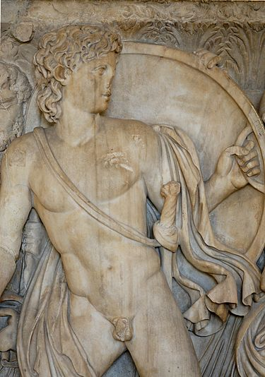
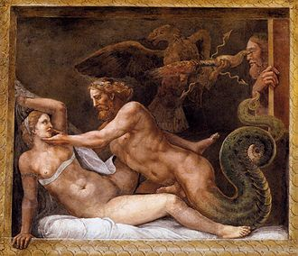
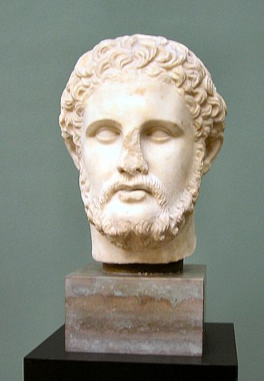
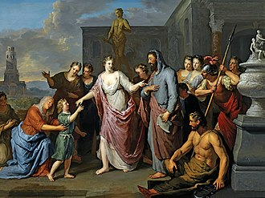

Источники
Сведения о жизни Олимпиады содержатся в нескольких античных источниках, при этом ни один из авторов не посвятил ей отдельного произведения. Основная биографическая информация об Олимпиаде приведена в трудах Диодора Сицилийского, Юстина и Плутарха. Все античные источники объединяет предвзятость к македонской царице. Поведение Олимпиады противоречило стереотипам поведения женщины в Древней Греции и Риме. В этих культурах роль женщины заключалась в рождении и воспитании детей, а в не занятии политикой[1].
«Историческая библиотека» Диодора была написана во второй половине I века до н. э. Особенностью этого труда является использование одного первоисточника для описания каждого конкретного периода истории, информацию из которого он дополнял собственными комментариями нравоучительного характера. В качестве основного источника информации о царствовании Александра Диодор использовал труды Клитарха, о войнах диадохов — Иеронима Кардийского. Жизнь Олимпиады у Диодора освещена неравномерно. Она упомянута всего в четырёх фрагментах «Исторической библиотеки» при описании событий жизни Александра. В то же время жизнь Олимпиады достаточно подробно, в деталях, описана после его смерти. Это можно объяснить как её малой активностью в общественных мероприятиях во время царствования Филиппа II и Александра, так и бо́льшим освещением её жизни Иеронимом Кардийским. В целом труд Диодора является главным источником о жизни Олимпиады после смерти Александра. В нём Олимпиада представлена как жестокой, так в то же время храброй и экстраординарной женщиной. Это даёт основание предполагать беспристрастность Диодора по отношению к македонской царице[2].
Римский историк II—III веков Юстин написал эпитому (краткое изложение) не дошедшей до нас «Филипповой истории» I века Гнея Помпея Трога. Его труд содержит много ошибок, однако по некоторым эпизодам он приводит нигде не встречающийся материал, который требует анализа. По современным оценкам, негативный образ Олимпиады был создан непосредственно Юстином, а не взят из сочинений Гнея Помпея Трога. Юстин, как и Диодор, уделяет больше внимания жизни Олимпиады после смерти Александра. Он одновременно критикует её за жестокость и в то же время восхищается ею за то, что она оправдала своё высокое происхождение, героически приняв неминуемую гибель. Для Юстина Олимпиада стала историческим примером при описании крайних проявлений жестокости, гордости и честолюбия[3].
В отличие от Диодора и Юстина, римский историк Квинт Курций Руф описывает лишь период царствования Александра. Помимо трёх мимолётных упоминаний нежных и доверительных взаимоотношений Олимпиады с сыном, Квинт Курций Руф сообщает несколько фактов, которые не встречаются у других историков. Согласно этому историку Александр хотел обожествить мать. Также он упоминает о попытке Олимпиады спасти нескольких молодых македонян от отправки в армию[4].
По мнению современных историков, вышеперечисленные авторы использовали одни и те же источники, преимущественно Клитарха. Однако, даже несмотря на общий первоисточник, их оценки Олимпиады, а также факты о её жизни разнятся[5].
В отличие от Диодора, Юстина и Курция Руфа, Арриан при написании своих книг о походах Александра использовал, кроме Клитарха, также труды Аристобула и Птолемея. Арриан преимущественно описывал военные походы Александра и крайне мало внимания уделил Олимпиаде. Она упомянута в «Анабасисе Александра» всего пять раз, четыре из которых не содержат какой-либо существенной информации[5].
Одним из наиболее важных источников о жизни Олимпиады являются труды Плутарха. Сочинения этого автора можно разделить на «Сравнительные жизнеописания» и серию коротких эссе «Моралии». Плутарх в большей степени, чем какой-либо другой античный автор, сформировал стандартный негативный образ Олимпиады. Во многом это произошло из-за того, что поколения учёных при описании жизни царицы отдавали предпочтение биографии Александра из «Сравнительных жизнеописаний». В ней содержится информация о жизни Олимпиады до смерти Александра, которая отсутствует у других авторов. Плутархова Олимпиада не только отталкивает, но и привлекает. Образ Олимпиады в «Моралиях» значительно более лестный, по сравнению с таковым из жизнеописания Александра. Также автор допускает разночтения при описании одного и того же события в «Моралиях» и жизнеописании Александра[6].
Некоторые сведения о происхождении и жизни Олимпиады содержатся в трудах древнегреческого историка и географа II века Павсания. Хотя этого автора и не относят к числу скрупулёзных историков, чьи данные заслуживают безусловного доверия, он приводит нигде не встречающуюся информацию об Олимпиаде. Для Павсания характерно общее негативное отношение к Филиппу II, Александру и Македонии в целом, которых он считал причиной упадка Греции[7].
Сведения о жизни Олимпиады преимущественно основываются на данных из литературных источников, которые были созданы через несколько веков после её смерти. Немногочисленные прижизненные свидетельства, а также фрагменты аттидографов[en] (авторов работ по истории Аттики и Афин) и историков IV века до н. э. об Олимпиаде включают немногочисленные фрагменты из речей аттических ораторов и эпиграфические данные. При их изучении невозможно создать цельный образ македонской царицы, правительницы государства и матери одного из наиболее знаменитых военачальников Античности Александра. В связи с этим у историков имеются большие сомнения относительно достоверности современных представлений об Олимпиаде[8].
Происхождение. Ранние годы
Олимпиада родилась около 375 года до н. э. (не позднее 371 года до н. э.[9]) в Пассароне[en][10] в семье царевича одной из областей Эпира, Молоссии, Неоптолема I[11][12] из династии Эакидов[13]. Представители этой семьи возводили свой род к мифологическому герою Ахиллу и царям легендарной Трои[14][13]. В архаичном древнем Эпире, где прошло детство Олимпиады, женщина пользовалась большей самостоятельностью по сравнению с патриархальным обществом классической Греции[15]. Согласно Плутарху, «мать Александра Поликсену называли … Мирталой, и Олимпиадой, и Стратоникой»[16][17]. Этот фрагмент историки оценивают следующим образом. При рождении девочку назвали по имени одной из троянских царевен Поликсены, чтобы подчеркнуть древность рода[18]. Имя «Миртала» девочка получила во время неких мистерий[19][20][21]. Согласно современным представлениям Олимпиада практиковала некий мистериальный культ, возможно, Кабиров, в котором важная роль отводилась змеям[22]. После свадьбы Филипп дал жене имя Олимпиада в честь своей недавней победы на Олимпийских играх. В конце жизни она взяла имя Стратоники, что обозначало «военная победа»[20][23].
По словам Плутарха, Филипп впервые встретил Олимпиаду ещё отроком на острове Самофракия, где их обоих посвящали в мистерии[24]. По одной из легенд, будущий македонский царь влюбился в Олимпиаду при первой же встрече[22][12]. Эти утверждения, по мнению Э. Карни, не соответствовали действительности. Самофракийские культы не были распространены в Македонии, что делало участие в них македонского царевича маловероятным. Также личные пристрастия при заключении браков между монаршими особами были вторичны[25]. Возможно, Олимпиада впервые увидела Филиппа II на Самофракии, когда состоялось их обручение[26]. Не исключено, что девушку на встречу с женихом сопровождал её дядя молосский царь Арриб[27].
В источниках отсутствуют какие-либо сведения о ранних годах жизни Олимпиады. Несомненно, что её детство не было простым. В 361 году до н. э. умер дед Олимпиады молосский царь Алкет I. После смерти Алкета между Аррибом и его старшим братом, отцом Олимпиады Неоптолемом возникли связанные с престолонаследием трения. В конечном итоге они договорились править совместно, однако историкам неизвестно, в какой форме произошло распределение власти[28]. Арриб короткое время правил совместно с братом до его смерти в 360 году до н. э., а после приобрёл единоличную власть[28]. Он женился на своей племяннице, дочери Неоптолема Троаде[29]. Историкам достоверно неизвестно, когда произошла свадьба — до или после смерти Неоптолема[30]. Также он взял опеку над двумя другими детьми Неоптолема — Олимпиадой и Александром[31].
По мнению Ф. Шахермайра, Олимпиаду в детстве били и унижали[32]. Вскоре в Эпир вторглись племена иллирийцев под командованием царя Бардила. Вероятно, Олимпиада, вместе с другими женщинами царского двора, какое-то время провела в эвакуации. Таким образом, детство Олимпиады было омрачено семейным горем, проходило среди интриг, опасностей и неопределённости[33].
Македонская царица
Дядя и опекун Олимпиады Арриб выдал свою подопечную замуж за Филиппа II[29], для которого это был четвёртый брак[22], в промежутке между 359 и 357 годами до н. э.[9][12]. Свадьба между македонским царём и эпирской царевной означала создание альянса между двумя государствами[34] и носила династический характер[35]. Через Олимпиаду Филипп II стремился упрочить своё положение в соседнем Эпире[32]. В семье македонских царей Аргеадов полигамия была нормальным явлением. Происхождение и политическое влияние семьи Олимпиады делало её «первой» супругой македонского царя[36]. Возможно, такой статус Олимпиады был частью брачного договора между Филиппом II и Аррибом. Также Арриб мог выторговать признание сына Олимпиады наследником македонского престола[37]. Частью соглашения, возможно, была передача Македонии региона Орестида в качестве приданого Олимпиады[38][39].
В 356 году до н. э. у Олимпиады родился сын Александр, получивший позднее эпитет Великий. С зачатием и рождением молодого царевича связано множество легенд, часть из которых дошла до нас в трудах античных авторов. Среди них наиболее известным стало предание о зачатии от верховного бога Зевса, который принял вид змея. Возможно, легенда была создана официальной пропагандой в то время, когда Александр потребовал своего обожествления. В таком случае Олимпиада и сама должна была как минимум туманно намекать на божественное происхождение сына[40]. Плутарх писал, что Александр родился в тот день, когда Герострат сжёг храм Артемиды Эфесской. Гегесий Магнесийский[en] впоследствии сострил, что Артемида, одной из функций которой была помощь роженицам, могла бы спасти храм, если бы не была занята Олимпиадой[41][12]. В промежутке между 355 и 352 годами до н. э. Олимпиада родила Филиппу дочь Клеопатру[42][43][12][44]. Из всех жён Филиппа II лишь Олимпиада родила македонскому царю двух детей, что, по мнению Э. Карни, свидетельствует также и о влечении Филиппа II к супруге[45].
Олимпиада занимала главенствующее положение среди других жён Филиппа II и стала одной из наиболее влиятельных персон при македонском дворе. Частично это можно объяснить статусом матери наследника престола. Также нельзя исключить особую искушённость Олимпиады в интригах при македонском дворе[46]. Старший сын царя слабоумный Арридей не воспринимался среди македонской знати в качестве человека, который может занять престол, как из-за низкого происхождения своей матери Филинны, так и вследствие болезни. Супруг Олимпиады бо́льшую часть времени проводил в военных походах, поэтому воспитанием сына занималась она сама. Она делала всё для укрепления его положения наследника престола. По одной из версий, Олимпиада настраивала сына против отца[47]. Насколько это соответствовало действительности, достоверно неизвестно, однако Александр в детстве был ближе к матери, чем к отцу, который постоянно находился в походах, а у себя дома в Македонии предавался пирам и развлечениям[48].
По одной из версий, старший единокровный брат Александра и гипотетический наследник престола Арридей стал слабоумным из-за снадобий Олимпиады[49]. Насколько это соответствовало действительности, неизвестно, однако такое мнение существовало и распространялось врагами Олимпиады ещё при её жизни[50]. Также Олимпиада подбирала наставников для сына. Дальним родственником Олимпиады был первый наставник Александра Леонид. По мнению Э. Карни, именно Олимпиада выбрала учителем для сына знаменитого философа Аристотеля[50]. В жизнеописании Аристотеля Диоген Лаэртский приводит информацию о существовании письма философа «К Олимпиаде», что свидетельствует об их знакомстве[51][50]. Забота Олимпиады о сыне не ограничивалась только подбором учителей. Согласно античным источникам, она включала также и сексуальное воспитание: «Феофраст утверждал, что Александр не был расположен к делам любовным: Олимпиада с Филиппом даже опасались, не женоподобен ли он, и Олимпиада не раз подкладывала к нему в постель прекраснейшую из фессалийских гетер Калликсену и упрашивала с ней сойтись»[52]. По мнению Ф. Шахермайра, личность Олимпиады, особенности её взаимоотношений с мужем наложили на Александра моральный отпечаток, сделали его нечувствительным к женской красоте и любви[53].
В описываемый промежуток времени взаимоотношения между Олимпиадой и Филиппом II были относительно спокойными. Македонский царь пригласил ко двору брата Олимпиады Александра. Затем Филипп II завоевал родовое царство Пирридов Молоссию, расширил его владения и передал, не без определённых обязательств, Александру. В историографии существует дискуссия относительно хронологии данных событий, однако несомненно, что такое положение соответствовало интересам и желаниям Олимпиады[54][55][56][57][58].
Образ Олимпиады в античных источниках в целом негативный. Ей приписывали множество изощрённых преступлений, как, к примеру, умерщвление младенца с матерью Клеопатрой чуть ли не в кипящем котле. Такие характеристики впервые появились в трудах Феопомпа и Эфора, из которых брали информацию более поздние писатели. Источником соответствующих обвинений, возможно, является пропаганда времён правления Кассандра и Антипатридов, для которых Олимпиада была наиболее знаковым и влиятельным врагом их предка Антипатра. Также очернением матери Александра Кассандр и его потомки оправдывали убийство Олимпиады[159].
Плутарх представляет Олимпиаду ревнивой женщиной тяжёлого нрава. Согласно Арриану, Антипатр обвинял Олимпиаду в резкости, высокомерии и вмешательстве в управление Македонией. Диодор описывает зверства царицы, которые заставили македонян возненавидеть мать своего легендарного царя за жестокость. Павсаний назвал её действия безбожными, а Юстин — неразумными, характерными для мстительной женщины. Несмотря на это, античные авторы отдают должное храбрости и стойкости Олимпиады, её непоколебимости перед лицом неминуемой гибели[160].
В историографии информация об Олимпиаде преимущественно представлена в контексте описания жизни её знаменитого сына Александра. Большинство историков описывают Олимпиаду в русле сложившегося ещё в античности стереотипа безжалостной, мстительной и властолюбивой женщины. Возможно, это связано с трудностью изучения пристрастных источников и противоречивостью действий Олимпиады. Недоразумения при описании македонской царицы с годами накапливались, что в конечном итоге привело к её мифологизации[1].
В искусстве
Литература
Олимпиада является действующим персонажем большинства художественных произведений о жизни Александра. Впервые в качестве литературного персонажа она появляется уже в античном псевдоисторическом романе «История Александра Великого». В нём она представлена исключительно красивой и привлекательной женщиной, в которую влюбляются фараон Египта Нектанеб II и убийца Филиппа II Павсаний. В романе приведена легенда о том, что Александр был сыном египетского фараона, а не македонского царя. Согласно роману Нектанеб бежит в Македонию, так как его страну должны захватить персы. Там он влюбляется в Олимпиаду и с помощью колдовства добивается от неё взаимности. Олимпиада считает, что находится в связи с богом, чей образ принял Нектанеб. Таким образом египетский фараон достигает своей цели — его страной в будущем будет править египтянин[167].
В XX веке было написано около двадцати литературных произведений об Александре Македонском, в которых Олимпиада является одним из персонажей. Часть из них представляют классические исторические романы, часть — наполненную романтическими приключениями беллетристику. Наиболее известными являются романы Л. Купейруса «Искандер» (1920), К. Манна антиутопия «Александр» (1929), М. Баттс[en] «Македонец» (1933), Н. Казандакиса «Александр Великий» (1941), М. Дрюона «Александр Великий, или Книга о Боге» (1958), трилогия об Александре М. Рено 1959—1981 годов[168].
Изобразительное искусство
Прижизненных изображений Олимпиады не сохранилось. Наиболее древним объектом, на котором может быть изображена Олимпиада, является камея Гонзага III века до н. э., которая хранится в Эрмитаже и является одним из лучших образцов античной глиптики[169]. В начале XX века археологи обнаружили 20 золотых медальонов, которые отчеканили в первой половине III века. Предположительно их создали для вручения победителям на состязаниях в честь Александра. На пяти из них находится женское изображение, предположительно Олимпиады[170].
Изображение Олимпиады появляется на провинциальных македонских монетах и конторниатах[en] периода Римской империи. На них Олимпиада представлена возлежащей на кушетке во время кормления змей[171].
В Средневековье был написан первый рыцарский роман, средневековая обработка греческой «Истории Александра Великого», «Роман об Александре». Олимпиада была изображена на иллюстрациях к этой книге. Впоследствии её образ использовали в своих произведениях художники и скульпторы Нового времени[172][173].
Кино
Несмотря на то, что жизнь Александра Македонского, самого известного македонского царя, была полна ярких событий, фильмы о нём малочисленны и, по мнению критиков, разочаровывают зрителя. Два самых известных фильма, «Александр Великий» 1956 года Роберта Россена и «Александр» 2004 года Оливера Стоуна, оказались неудачными в коммерческом плане, несмотря на их большие бюджеты. Также они были раскритикованы историками за многочисленные ошибки и упущения[174].
Вне зависимости от их восприятия исторические фильмы могут давать ценную информацию о событиях и культурах древних цивилизаций. Также они дают возможность режиссёрам пролить свет на некоторые аспекты эпохи Александра. Особый интерес для Р. Россена и О. Стоуна представляла личность Олимпиады, которую сыграли знаменитые актрисы Даниэль Дарьё и Анджелина Джоли. Оба режиссёра постарались путём выбора акцентов и сознательных искажений исторических фактов отобразить современное видение роли женщины в патриархальном обществе Древней Македонии[175].
Первая часть фильма Р. Россена представляет обзор придворной жизни македонского двора на основе жизнеописания Александра у Плутарха. Олимпиада у Россена представлена сильной и харизматичной женщиной, которая эффективно борется за власть с помощью родственных связей, собственной привлекательности, умения плести интриги и манипулировать информацией. Олимпиада с самого начала фильма стремилась представить Александра сыном бога. С самого рождения она внушала сыну веру в его исключительность и божественное происхождение, что заложило основу всей дальнейшей жизни Александра. По мере взросления сына Олимпиада пытается с его помощью получить власть. Она убеждает Александра в том, что Филипп II хочет назначить наследником сына от Эвридики. Также она подталкивает Александра к убийству отца. В фильме Олимпиада представлена организатором убийства Филиппа II[176].